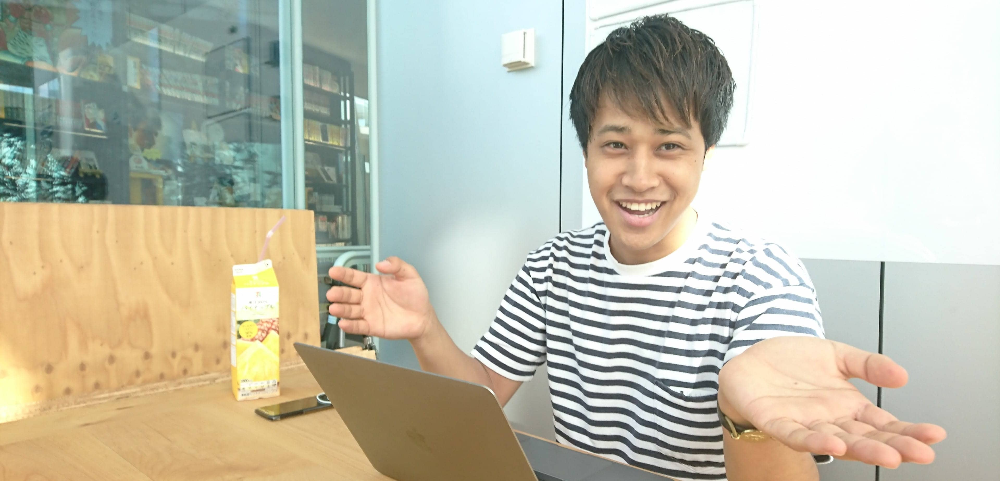

ホーム
私たちについて
ギャラリー
学習内容
チーム
インタビュー
お問い合わせ
近もく会の創始者である
中原雄太ってどんな人？
香山 佑衣
近もく会新入り
on
2019/08/27

中原さん
〚インタビュアープロフィール〛
中原 雄太(
＠yuta_50
）
近畿大学在学中に”近もく会”を創設。2019年3月に近畿大学を卒業。
メディアの立ち上げ準備中。
近もく会代表。好きな食べ物はタン塩。
新入り
〚インタビュアープロフィール〛
香山 佑衣
近畿大学1年。
プログラミングを始めて二か月。ＨＴＭＬ＆ＣＳＳを勉強中。
自分の仕事の遅さに驚いている。好きな食べ物は辛子明太子。
近もく会の代表にお話を伺いました！
目次
1.
近もく会の創設
2.
「職員さんとの偶然の出会い」
3.
学生の活動を応援したい
4.
近もく会の未来
近もく会の創設
新入り
近畿大学をすでにご卒業されている中原さんですが
在学中
は近もく会でどんな活動をされていたんですか?
中原さん
swift
という言語でiosアプリの開発をしていました。
新入り
swiftは
いつぐらいから学習
されていましたか？
中原さん
近もく会が
2018年6月
くらいから始まって、その時からswiftを書き始めていました。
新入り
そもそもなぜ
近もく会を作ろう
と思ったんでしょうか？
中原さん
一回プログラミングで
html・css・javascript
をかじった時にときに
あー無理や
ってなったんですよ。
だからもう一回swiftを始めようってなった時、一人でこのままへやにこもってやるってなっても、 いろいろ難しいんじゃないかなとか逆に
じぶんが挫折したときと、同じ経験とか状況にいる人が同じ大学にいるんじゃないか
と思って。
中原さん
こういう経緯でスタートして、最初は一人でアカデミックシアターの一室の火曜日16時45分から19時45分の時間をもらって、
一人で近もく会をスタートさせました
。
「職員さんとの偶然の出会い」
新入り
なるほどそんな背景があったんですね！
人集めるの大変だったんじゃないですか？
中原さん
偶然
アカデミックシアターの職員さんがプログラミング学習に力を入れようとしていたタイミング
で、 喜んで場所を貸してくれました。ある程度プログラミングをしている学生とその職員さんとのコネクションがあったから、 そういう学生たちに一応声掛けはしてくれて
数週間以内には二三人集まりました。
新入り
じゃあ割とスムーズに進んだんですね！
中原さん
想定よりかは
。
でも一人で待ち続ける期間があれだけでるとは思わなっかったですけど、友達が最初から数名来てくれるだろうなと思ったていたんですが、 思ったより友達少なかったみたいで（笑）あんまり来てくれなかったですね。
学生の活動を応援したい
新入り
現在
は何をされているんですか？
中原さん
現状は今サービス開発、
アプリ開発
と並行して
メディアの立ち上げ
をやっています。
新入り
どういった関連のアプリ
を作っているんでしょうか？
中原さん
iosアプリの事に関しては、
高校生が自分の所属している学校の卒業生から活動資金を得れる、 募れるようなアプリ
を開発しています。
中原さん
甲子園とかを見ててもですけど、
今現役で活動している高校生とかに直接的な繋がりはないのに 母校の学生だからっていう理由で応援するじゃないですか。
そういうのをうまく利用すれば、クラウドファンディングが普及しても機械がうまく与えられていない学生に対して機会を与えられるんじゃないかなって。
新入り
確かに後輩が頑張ってると応援したくなりますね！
高校生の活動
って部活とかですか？
中原さん
部活ももちろん、同好会とか学校から公認されていないような活動
だと結果出すまで公認の部活に昇格できないとかがあって、 自分たちでやってる活動を発信して、そこに賛同してくれるような人を募るようなものがあった方がいいんじゃないかなと考えていて、そういうところには使ってほしいですね。
近もく会の未来
新入り
プログラミングの良さ
って何ですか？
中原さん
自分の考えるこんなサービスがあったらいいなとかこんな社会になったらいいな
っていうのを、自分みたいな無名で、高学歴とかでも、お金を持ってるわけでもない人間が、
実際に形として世に出すことができる
とか。
新入り
プログラミング学習にてこずっているんですが、プログラミングって
どう勉強したらいい
と思いますか？
中原さん
まずは自分で手を動かすということが大前提
で、どうしてもわからない問題とか、知っている人からしたら大したことないような問題でも結構つまってしまって丸一日潰れたりとかが平気であるようなものだと思っているんで、プログラミングは。そこは
できるだけ聞きに行く
、もし周りに聞ける人がいなかったらtwitterとかのSNSで質問を飛ばすとか、勉強会に足を運ぶとかは意識していく感じじゃないですか。自分があまり何でも一人で解決していける優秀なタイプじゃないからこそ、人に会いに行ったりとかは意識してやってる感じです。
新入り
近もく会をどんな場にしたいですか？
中原さん
近もく会っていうのはプログラミング学習者の集いやとして、例えば何かサービスを作るチームが出てきたりとか毎日ここに来るような ハードワークするような人も出てきてももちろんいいと思うんですけど、 だからと言ってハードワークしないような人とかサービスを立ち上げるとかでもない人を排除するとかっていうのはできるだけこれからもしたくなくて。
中原さん
でも
挑戦する人には来てほしいかな
っていうのはあります。
新入り
と言いますと？
中原さん
その挑戦も人によってはホントにプログラミングをこれからやっていきたくてどう勉強していったらいいかわからないし、プログラミングのプの字も知らない状態で、ここに飛び込んでくる、ここに来てくれるっていう事すら
チャレンジ
やし、それこそ一回挫折してもう一回プログラミング始めるっていう
チャレンジ
の人もいるし、結局
自分なりの挑戦のできる場になってほしい
ですね。
新入り
誰しもが挑戦できる場。いいですね！
中原さん
一般的に見て、近もく会ってまだ
よく分からない場所
だと思うし、自分の肌感ではプログラミング自体に興味を持ってたりとか一回やってみたいっていう人ももちろんいると思うし、アプリ開発とか自分でサービス作って起業するとかに関心を持ってる人ってもっともっといると思ってて、そういう人たちがここに来ることによってそういうチャレンジをしてる人を近くで見て自分たちにもできそうだなって思うことは往々にしてあると思うんで、
挑戦したいと思っているならば気軽に来てほしいと思う！
新入り
中原さん、ありがとうございました！
中原 雄太( ＠yuta_50）
近畿大学在学中に”近もく会”を創設。2019年3月に近畿大学を卒業。
メディアの立ち上げ準備中。
近もく会代表。好きな食べ物はタン塩。